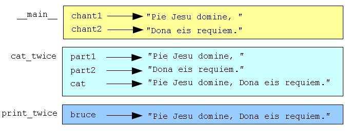

В программировании функцией называют именованную последовательность предложений, которая выполняет некоторые действия. Выполняемые действия описываются в определении функции.
В Python функция определяется так:
def имя(список параметров):
предложения
Можно давать создаваемым функциям любые имена, нужно только помнить, что использовать ключевые слова в качестве имен нельзя. Список параметров указывает, какую информацию, если она вообще нужна, пользователь должен передать функции.
Внутри функции может быть сколько угодно предложений, причем все они должны иметь отступ вправо относительно def. В примерах в этой книге используется стандартный отступ в 4 пробела. Определение функции — это первое из нескольких составных предложений, которые мы увидим; все они строятся по такой схеме:
В определении функции ключевое слово в заголовке — это def. За ним следуют имя функции и список параметров, заключенный в скобки. Список параметров может быть пустым или может содержать любое число параметров. В любом случае скобки необходимы.
Первые две функции, которые мы напишем, не имеют параметров.
def new_line():
print
Эта функция имеет имя new_line. Пустые скобки показывают, что функция не имеет параметров. Ее тело содержит единственное предложение, которое выводит символ новой строки. (Именно это происходит, когда вы используете print без аргументов.)
Определение новой функции не приводит автоматически к выполнению этой функции. Чтобы выполнить функцию, нужно сделать вызов функции. Для вызова функции записывают имя функции, за которым в скобках следует список аргументов. При вызове функции аргументы присваиваются параметрам из определения функции.
В наших первых примерах функции имеют пустой список параметров, так что вызов функции не требует аргументов. Заметьте, однако, что в вызове функции скобки необходимы:
print "First Line."
new_line()
print "Second Line."
Эта программа выводит:
First line.
Second line.
Дополнительное пространство между двумя строками — это результат вызова функции new_line(). А что если нам понадобится больше свободного места между строками? В таком случае мы могли бы вызвать одну и ту же функцию несколько раз:
print "First Line."
new_line()
new_line()
new_line()
print "Second Line."
Или мы могли бы написать новую функцию с именем three_lines, которая выводит три символа новой строки:
def three_lines():
new_line()
new_line()
new_line()
print "First Line."
three_lines()
print "Second Line."
Эта функция содержит три предложения, каждое из которых записано с отступом в 4 пробела. Поскольку следующее предложение не имеет отступа, Python понимает, что оно не является частью определения функции.
Стоит заметить несколько вещей в связи с этой программой:
Для чего нужно утруждать себя созданием новых функций? Для этого есть много причин, и рассмотренный пример демонстрирует две из них:
Соберем вместе фрагменты кода из этого раздела в скрипт tryme1.py:
def new_line():
print
def three_lines():
new_line()
new_line()
new_line()
print "First Line."
three_lines()
print "Second Line."
В этой программе определяются две функции: new_line и three_lines. Составное предложение def, определяющее функцию, выполняются так же, как и другие предложения, а его результатом является создание новой функции. Предложения в теле функции не выполняются до тех пор, пока функция не будет вызвана.
Прежде чем выполнить функцию, ее нужно создать. Другими словами, определение функции должно выполняться прежде, чем в программе встречается первый вызов этой функции.
Чтобы быть уверенным, что функция определена прежде, чем вызывается, нужно знать порядок, в котором выполняются предложения. Порядок выполнения предложений в программе называется потоком выполнения.
Выполнение всегда начинается с первой строки программы. Предложения выполняются по одному за раз, сверху вниз.
Определения функций не нарушают поток выполнения программы, но предложения внутри функций не выполняются до тех пор, пока функция не вызвана. Хотя это нечасто используется, но можно определить одну функцию внутри другой. В этом случае, внутреннее определение не выполнится до тех пор, пока не будет вызвана внешняя функция.
Вызов функции — как объезд в потоке выполнения. Вместо того, чтобы перейти к следующему предложению, выполняется переход на первое предложение тела функции, выполняются предложения тела функции, и затем выполняется возврат туда, откуда был сделан вызов функции.
Выглядит достаточно просто, пока вы не вспомните о том, что одна функция может вызывать другую. А эта другая может вызывать третью, и так далее!
Но Python точно “знает”, откуда вызвана текущая выполняемая функция, так что каждый раз, когда функция завершается, программа продолжается с того места, где она была перед вызовом функции. Когда достигнут конец программы, она завершается.
В чем здесь мораль? Когда читаете программу, не читайте ее просто сверху вниз. Следуйте за потоком выполнения.
Большинству функций нужны аргументы — значения, которые используются функцией для ее работы. Например, если вы хотите найти абсолютное значение числа, то нужно указать, какого именно числа. В Python имеется встроенная функция для вычисления абсолютного значения числа:
>>> abs(5)
5
>>> abs(-5)
5
В этом примере, аргументами функции abs являются 5 и -5.
Некоторые функции принимают больше одного аргумента. Например, встроенная функция pow берет два аргумента, основание и степень. Внутри функции передаваемые в нее значения присваиваются переменным, которые называются параметры.
>>> pow(2, 3)
8
>>> pow(7, 4)
2401
Другая встроенная функция, принимающая больше одного аргумента, — функция max.
>>> max(7, 11)
11
>>> max(4, 1, 17, 2, 12)
17
>>> max(3 * 11, 5**3, 512 - 9, 1024**0)
503
В функцию max можно передать любое число аргументов, разделенных запятыми; функция вернет максимальное из переданных ей значений. Аргументами могут быть как простые значения, так и выражения. В последнем примере функция вернула 503, поскольку 503 больше, чем 33, 125 и 1.
А вот пример определенной пользователем функции с одним параметром:
def print_twice(bruce):
print bruce, bruce
Эта функция принимает единственный аргумент и присваивает его значение параметру с именем bruce. Значение параметра (определяя функцию, мы понятия не имеем, какое именно это значение) выводится дважды, после чего выводится символ новой строки. Имя bruce здесь просто демонстрирует, что вы можете дать параметру какое угодно имя. Но будет правильным давать параметрам более информативные имена, чем bruce.
Интерактивный режим интерпретатора Python предоставляет удобную среду для тестирования ваших функций. Можно воспользоваться предложением import чтобы загрузить функции, определенные в скрипте, в сеанс интерпретатора.
Предположим, что функция print_twice определена в скрипте с именем chap03.py. Тогда мы сможем работать с ней в интерактивном режиме, импортировав ее в сеанс Python:
>>> from chap03 import *
>>> print_twice('Spam')
Spam Spam
>>> print_twice(5)
5 5
>>> print_twice(3.14159)
3.14159 3.14159
При вызове функции значение аргумента присваивается соответствующему параметру из определения функции. Все выглядит так, как будто при вызове print_twice('Spam') выполняется bruce = 'Spam', при вызове print_twice(5) выполняется bruce = 5, а при вызове print_twice(3.14159) выполняется bruce = 3.14159.
Значение любого типа, которое может быть напечатано, можно передать в функцию print_twice. В первом вызове функции в приведенном примере аргумент является строкой. Во втором — целым числом. А в третьем — числом с плавающей точкой.
Как и в случае со встроенными функциями, в качестве аргумента для print_twice можно использовать выражение:
>>> print_twice('Spam' * 4)
SpamSpamSpamSpam SpamSpamSpamSpam
Вначале вычисляется выражение 'Spam'*4, что дает значение 'SpamSpamSpamSpam', а затем это значение передается в функцию print_twice как аргумент.
Как и в математике, функции в Python можно комбинировать, то есть, использовать результат одной функции в качестве аргумента при вызове другой.
>>> print_twice(abs(-7))
7 7
>>> print_twice(max(3, 1, abs(-11), 7))
11 11
В первом случае abs(-7) дает значение 7, которое становится аргументом для print_twice. Во втором случае у нас двухуровневая композиция, так как сначала вычисляется abs(-11), что дает 11, затем вычисление max(3, 1, 11, 7) дает 11 и, наконец, print_twice(11) отображает результат.
В качестве аргумента можно использовать переменную:
>>> michael = 'Eric, the half a bee.'
>>> print_twice(michael)
Eric, the half a bee. Eric, the half a bee.
Сделаем важное замечание. Имя переменной, которое мы указываем в качестве аргумента (michael) не имеет никакого отношения к имени параметра (bruce). Абсолютно все равно, с каким именем связано значение в том месте программы, откуда оно передается в функцию; внутри функции print_twice мы зовем его bruce.
Когда вы создаете локальную переменную внутри функции, она существует только внутри функции, и её невозможно использовать снаружи. Например:
def cat_twice(part1, part2):
cat = part1 + part2
print_twice(cat)
Эта функция принимает два аргумента, конкатенирует их и затем дважды печатает результат. Можно вызвать эту функцию с двумя строками:
>>> chant1 = "Pie Jesu domine, "
>>> chant2 = "Dona eis requiem."
>>> cat_twice(chant1, chant2)
Pie Jesu domine, Dona eis requiem. Pie Jesu domine, Dona eis requiem.
Когда завершается cat_twice, переменная cat уничтожается. Если попробовать вывести ее, то получим ошибку:
>>> print cat
NameError: name 'cat' is not defined
Параметры также являются локальными. Например, снаружи функции print_twice не существует такой вещи, как bruce. Если попробовать её использовать, Python выдаст сообщение об ошибке.
Для того, чтобы отследить, какую переменную где можно использовать, иногда полезно нарисовать стековую диаграмму. (По-английски стек означает кипу или штабель, то есть, некоторое количество однородных предметов, положенных один на другой.) Как и диаграмма из предыдущей главы, стековые диаграммы показывают значение каждой переменной, но, кроме того, они показывают функцию, которой принадлежит каждая переменная.
Каждая функция представлена прямоугольником, возле которого записано имя функции, а внутри записаны имена ее параметров и переменных. Стековая диаграмма для предыдущего примера выглядит так:
Порядок размещения функций в стеке показывает поток выполнения. print_twice вызывается функцией cat_twice, а cat_twice вызывается из __main__. Это специальное имя для функции самого верхнего уровня. Когда создается переменная вне каких-либо функций, она принадлежит __main__.
Каждый параметр функции имеет то же значение, что и соответствующий ему аргумент. Так, значение part1 то же, что у chant1, part2 — то же, что у chant2 и bruce — то же, что у cat.
Если во время выполнения функции происходит ошибка, Python печатает имя выполнявшейся функции, а также имя функции, которая ее вызвала, а также имя функции, которая вызвала эту функцию, и так далее, до функции самого верхнего уровня.
Чтобы посмотреть, как это работает, создайте скрипт Python с именем tryme2.py и следующим содержанием:
def print_twice(bruce):
print bruce, bruce
print cat
def cat_twice(part1, part2):
cat = part1 + part2
print_twice(cat)
chant1 = "Pie Jesu domine, "
chant2 = "Dona eis requim."
cat_twice(chant1, chant2)
Мы добавили предложение print cat в функцию print_twice, но переменная cat там не определена. Выполнение этого скрипта приведет к сообщению об ошибке, похожему на это:
Traceback (innermost last):
File "tryme2.py", line 11, in <module>
cat_twice(chant1, chant2)
File "tryme2.py", line 7, in cat_twice
print_twice(cat)
File "tryme2.py", line 3, in print_twice
print cat
NameError: global name 'cat' is not defined
Этот список называется трассировкой стека. Он содержит информацию о том, в каком файле произошла ошибка, и какая строка какой функции выполнялась в это время. Он также показывает строку кода, вызвавшую ошибку.
Обратите внимание на сходство между трассировкой стека и стековой диаграммой. Это не случайное совпадение, так как в основе обеих лежит один и тот же механизм.
Предложение, позволяющее сделать функции и переменные, определенные в скрипте Python, доступными при выполнении другого скрипта или в интерактивном режиме Python. Например, пусть имеется скрипт с именем tryme.py:
def print_thrice(thing):
print thing, thing, thing
n = 42
s = "And now for something completely different..."
Теперь запустим интерпретатор в той директории, где размещается tryme.py:
$ ls
tryme.py
$ python
>>>
В tryme.py определены три имени: print_thrice, n, и s. Если попробовать использовать их, не выполнив импорт, то получим ошибку:
>>> n
Traceback (most recent call last):
File "<stdin>", line 1, in <module>
NameError: name 'n' is not defined
>>> print_thrice("ouch!")
Traceback (most recent call last):
File "<stdin>", line 1, in <module>
NameError: name 'print_thrice' is not defined
Если, однако, импортировать всё из tryme.py, то можно будет использовать всё, что в нем определено:
>>> from tryme import *
>>> n
42
>>> s
'And now for something completely different...'
>>> print_thrice("Yipee!")
Yipee! Yipee! Yipee!
>>>
Заметьте, что не нужно включать .py в имя скрипта в предложении import.
Предложение, состоящее из двух частей:
Составное предложение строится так:
keyword expression:
statement
statement ...
С помощью текстового редактора создайте скрипт Python с именем tryme3.py. Поместите в него функцию nine_lines, которая использует three_lines чтобы выводить девять пустых строк. Теперь добавьте функцию clear_screen, которая выводит 25 пустых строк. В последней строке вашей программы напишите вызов clear_screen.
Переместите последнюю строку в tryme3.py в начало программы, так, чтобы вызов функции clear_screen находился перед определением функции. Запустите программу и заметьте, какое сообщение об ошибке вы получили. Можете сформулировать правило о том, как должны располагаться в программе определения функций и вызовы функций относительно друг друга?
Вернувшись к рабочей версии tryme3.py, поместите определение функции new_line после определения функции three_lines. Посмотрите, что произойдет, когда вы запустите эту программу. Теперь поместите определение new_line ниже вызова three_lines(). Объясните, как поведение программы иллюстрирует правило, сформулированное в предыдущем примере.
Напишите тело в определении функции cat_n_times так, чтобы строка s печаталась n раз:
def cat_n_times(s, n):
<fill in your code here>
Сохраните эту функцию в скрипте с именем import_test.py. Находясь в той директории, в которой сохранен файл (команда ls в Unix должна показать import_test.py), запустите интерпретатор Python в интерактивном режиме и попробуйте выполнить следующее:
>>> from import_test import *
>>> cat_n_times('Spam', 7)
SpamSpamSpamSpamSpamSpamSpam
Если вы сделали все правильно, то у вас должен получиться такой же результат. Поэкспериментируйте, вызывая cat_n_times с разными аргументами.